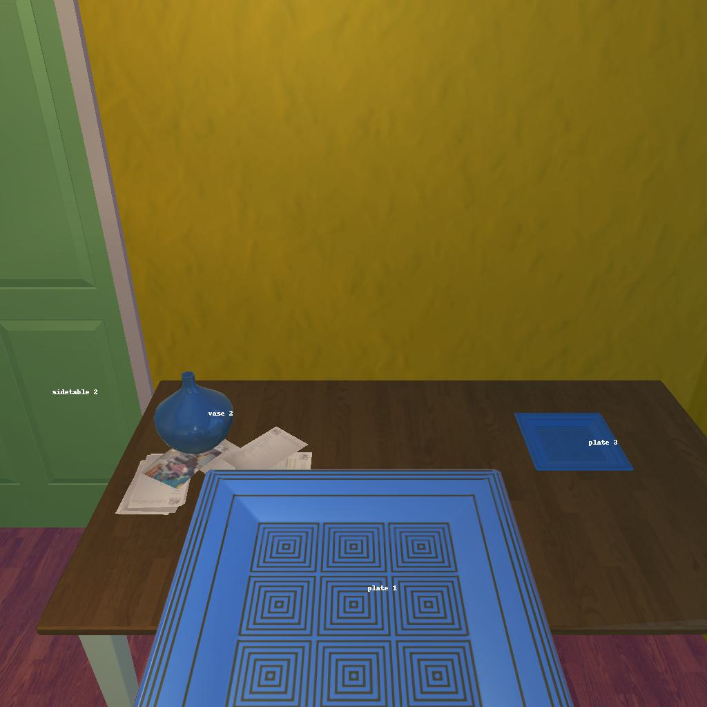

---------------------------------------------------------task: 3---------------------------------------------------------
--------------------------------------------------------------------------------------------------------------------------------------------------------------------
--------------------------------------------------------------------------------------------------------------------------------------------------------------------
Step:--------------------------------------------------------------------------15-------------------------------------------------------------------------------
----------------------------------------
VLM Prompt:
Image1:
Image2:
Image3:
**Instruction**
1. Analyze the provided image to identify all visible household objects, focusing on those relevant to the task description "look at plate under the floorlamp."
2. Use the analysis of the image and the task hint "The agent must find an object of the desired type, locate and turn on a light source with the desired object in-hand." to answer the question: what is the most reasonable action in the choices for the task description "look at plate under the floorlamp"?
4. Decide and write the answer using the template: The answer is: (i): , where i is the real number. If there is no desired object in the image, search every place based on **Initial Observation** to find the object. And if no one is exactly correct, choose a similar answer.
**Initial Observation**
You are in the middle of a room. Looking quickly around you, you can see armchair (1), garbagecan (1), tvstand (1), shelf (1-5), sofa (1), coffeetable (1), sidetable (1-2), drawer (1)
**Answer Choices**
(1): go to armchair 1
(2): go to garbagecan 1
(3): go to tvstand 1
(4): go to shelf 1
(5): go to shelf 2
(6): go to sofa 1
(7): go to coffeetable 1
(8): go to drawer 1
(9): go to shelf 3
(10): go to shelf 4
(11): go to shelf 5
(12): put plate 1 in/on sidetable 1
(13): use floorlamp 1
(14): examine plate 1
**Answer**
Let's think step by step by following the instructions.
----------------------------------------
----------------------------------------
Original Response:
First, we need to identify all visible household objects relevant to the task description "look at plate under the floorlamp." Upon analyzing the images, we can see that there are three plates in the room: plate 1 on the sidetable 1, plate 2 on shelf 4, and plate 3 on sidetable 2. Since we are instructed to look at the plate under the floorlamp, we can see that plate 1 on sidetable 1 is the closest to the floorlamp 1.
Next, using the task hint, we understand that the agent must find an object of the desired type (which is a plate), locate and turn on a light source (which is the floorlamp) with the desired object in-hand.
Based on this analysis and the answer choices given, the most reasonable action to accomplish the task description "look at plate under the floorlamp" would be to first go to the sidetable 1 to get the plate, then go to the floorlamp and turn it on.
However, there is no direct action available to pick up the plate, so the closest action related to the task would be to examine plate 1 to ensure it's the correct one before proceeding with turning on the floorlamp.
The answer is: (14): examine plate 1.
----------------------------------------
----------------------------------------
>>> Refine Original VLM Response and Get Pure Action: examine plate 1
----------------------------------------
-----------------------------------------------------------------
Running time: 24.415671825408936 seconds
Total Money: 1.6639100000000002
-----------------------------------------------------------------
-----------------------------------------------------------------
Text Observation:This is a normal plate 1
-----------------------------------------------------------------
UNSUCCEED